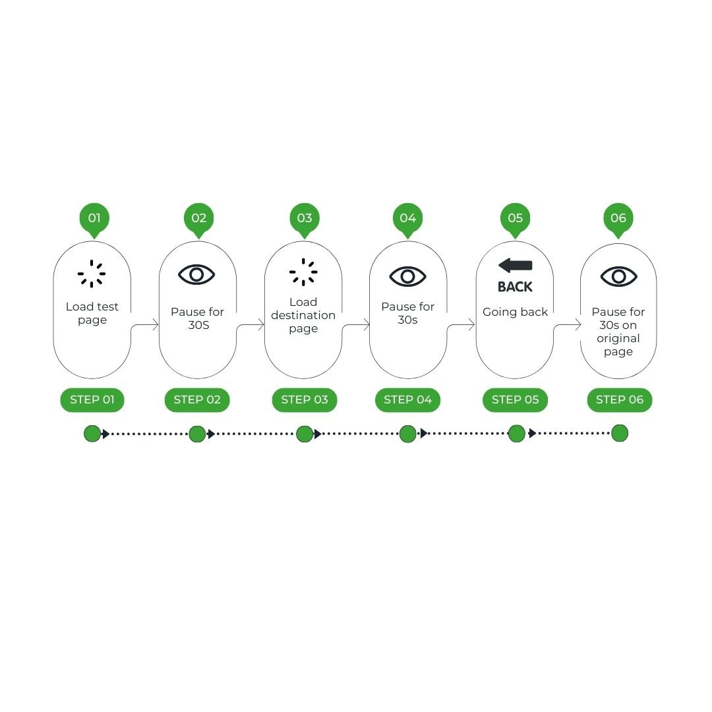
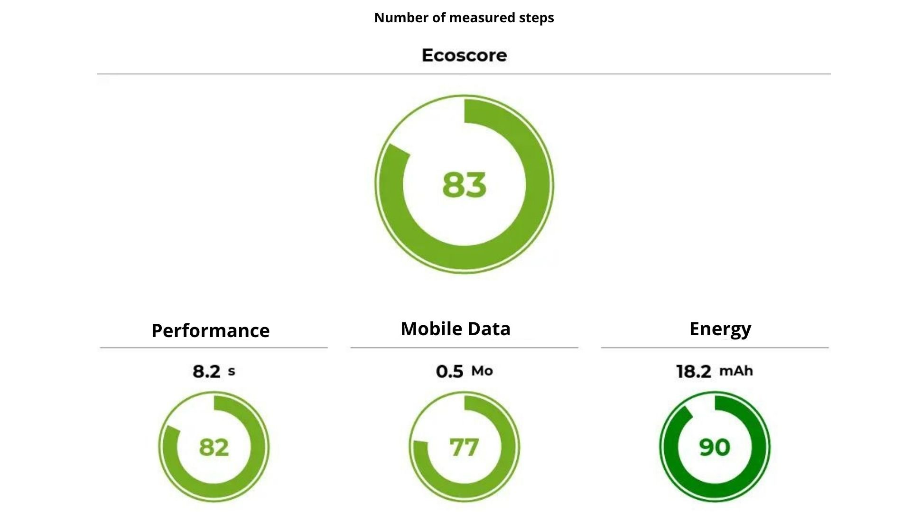
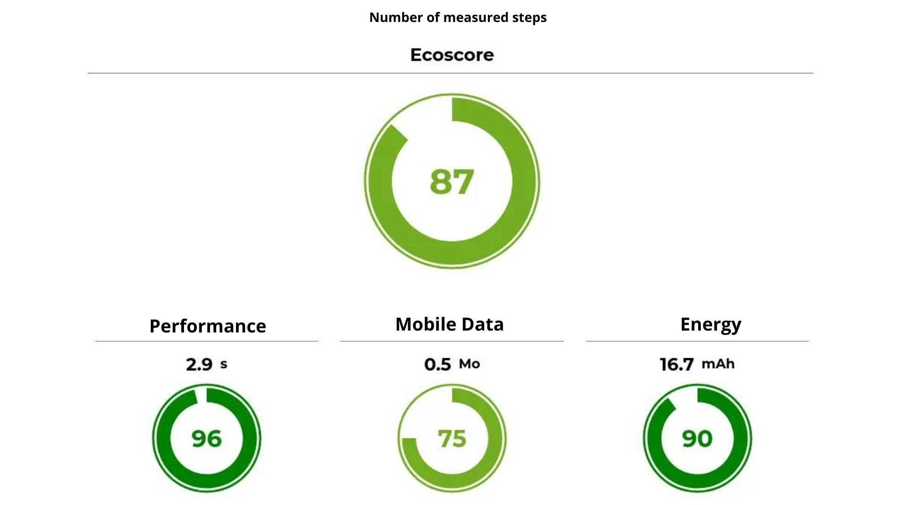
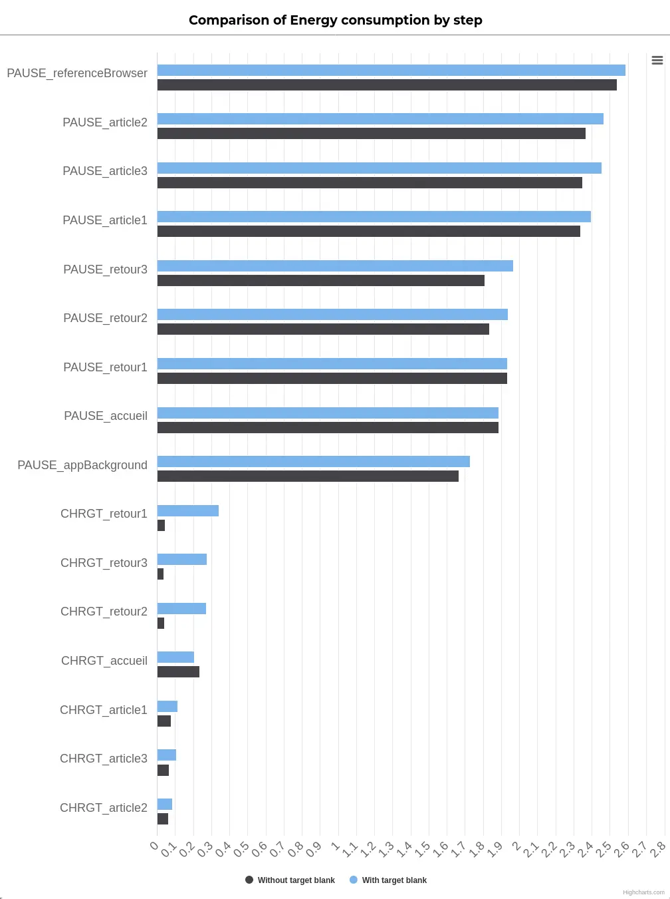

Introduction
Older users may remember a time when browsers didn’t yet offer the option of opening content in multiple tabs. The emergence of this possibility has given rise to a debate that has yet to find a definitive answer: should links be opened by default in another tab or not?
Key numbers
The results obtained for opening links in another tab are summarized as follows:
The overall impact is 1.9 gCO2eq, 0.4 L water consumption and 4.1 cm2 land use.
The results obtained for opening links in the same tab are summarized as follows:
The overall impact is 1.8 gCO2eq, 0.3 L water consumption and 3.9 cm2 land use.
On a website, the default behavior when a link is clicked is to open it in the tab the user is already in. To return to the initial page, the easiest thing to do is to use the browser’s (or your phone’s) backspace function. This may be seen by some Internet users as an inconvenience. There are at least two possible solutions:
- On the user’s side: hold down the Ctrl key to open the link in another tab, or click with the mouse wheel.
- For developers: force the link to open in a new tab (via the target= »_blank » attribute or via JS). However, this means leaving the user no choice. It is therefore advisable to notify the user of this behavior (Opquast Rule 141 – Users are notified of new window openings). Otherwise, this may lead to accessibility problems.
In all cases, target= »_blank » must be accompanied by additional attributes for security reasons, as follows:
<a href=”https://blog.greenspector.com/fr/le-petit-bout-de-la-lorgnette/” target=”_blank” rel=”noopener noreferrer”>
The « noopener » (https://html.spec.whatwg.org/multipage/links.html#link-type-noopener [EN]) and « noreferrer » (https://html.spec.whatwg.org/multipage/links.html#link-type-noreferrer [EN]) values ensure that context information is not passed on when the link is clicked. Seemingly redundant, they are mentioned here together to support some (very) older browsers: https://stackoverflow.com/a/57630677 [EN].
The discussion about whether or not to open links in another tab (or on another page) is not new, and the arguments are numerous. Many of them can be found here: https://www.badsender.com/en/2023/01/27/target-blank-links-email/
From the point of view of environmental impact, there is also room for discussion. Opening the link in another tab could lead to an unnecessary multiplication of open tabs, thus increasing the environmental impact (by putting more strain on the terminal). Conversely, opening the link on the same page could lengthen the user’s journey on the original site, risking a loss of progress after going back (entering information, reading an article in progress, etc.).
As always, it’s important to get back to the real reasons behind this choice, especially if it’s a question of improving your own site’s statistics by keeping it open while the user explores other links (which is not a good way of doing things).
In the absence of an ideal answer to this problem, we decided to use measurement to shed further light on the issue.
Methodology
We’ve created a test page that’s as simple as possible. It features two links leading to the same page. The first opens in the same tab, the second in another tab.
For the measurement, two GDSL scripts were created to automate the route and take the measurements:
- A script that consists of clicking on the link that opens in another tab and then returning to the first tab (three times in a row)
- A script that consists in clicking on the link that opens in the same tab and then going back via the browser directly (three times in a row)
Each of these routes follows the same stages :
- Load test page
- Pause for 30s on test page
- Load destination page (click on link)
- Pause for 30s on destination page
- Going back
- Pause for 30s on original page
Steps 3 to 6 are repeated 3 times each, in this order.

In all cases, the link destination page is the same. The idea here was to choose a lightweight page with enough content for the measurements to be meaningful. We therefore chose an article from the Greenspector blog: https://blog.greenspector.com/fr/le-petit-bout-de-la-lorgnette/ Beyond the first iteration, the cache limits the number of requests made by relying on elements stored on the client side (as with any web page, provided it is correctly configured).
The measurements are performed on the latest version of the Chrome browser on a Samsung S9 phone with brightness set to 50%, in WIFI. Ten iterations of measurements were performed for each script.
Measurements were taken between August 24 and 29, 2023. Following these measurements, a campaign dashboard (aggregating data from Greenspector tools) was generated, in particular to be able to compare measurement stages and calculate an overall Ecoscore based on Performance, Transferred Data and Energy scores.
For the environmental projection, the following assumptions are made:
- 100% of users and servers in France
- 100% complex servers
- 51% of users on smartphone, 3% on tablet, 46% on PC (average stats for France)
Results
The results obtained for opening links in another tab are summarized as follows:

The overall impact is 1.9 g CO2e, 0.4 L water consumption and 4.1 cm2 land use.
The results obtained for opening links in the same tab are summarized as follows:

The overall impact is 1.8 g CO2e, 0.3 L water consumption and 3.9 cm² land use.
Initially, therefore, it appears that opening links in the same tab is slightly more advantageous from an environmental point of view. In particular, it appears that the path is much shorter when opened in the same tab. In fact, it’s easier to go back via the button on Android phones than to go through the list of open tabs.
Presumably, keeping tabs open has a greater impact on the phone’s battery. Let’s take a closer look.
The following diagram shows the energy consumption of the various stages:

Blue indicates the opening of links in another tab. Black indicates opening in the same tab.
Stages of the journey with links opened in the same tab are almost systematically less impactful. In particular, this is true for pause steps, which seems to confirm the impact of multiple tabs opened when pausing on the current tab. This also reflects the fact that going back is much easier via the phone button than via the tab list.
For all the steps measured, very little data is transferred. However, for users who need to go back, it’s important to integrate the bfcache (https://web.dev/bfcache/ [EN]). This browser optimization makes backtracking and forwarding smoother.
Conclusion
Based on the environmental metrics and projections for the test case chosen here, it seems more advantageous to open the links in the same tab by default. On the other hand, it’s important to bear in mind that the user mustn’t lose progress in this way (e.g. while typing or reading a long page). What’s more, the bfcache must be correctly implemented to allow subsequent backtracking. In this case, the user is free to open the link in another tab using the shortcuts provided. However, it is essential to provide information on the behavior of links if this is not the default behavior (as well as the language of the destination page if it differs from the original page). In conclusion, let’s not forget that accessibility and quality (as implemented via the Opquast rules) must remain a priority when integrating links.